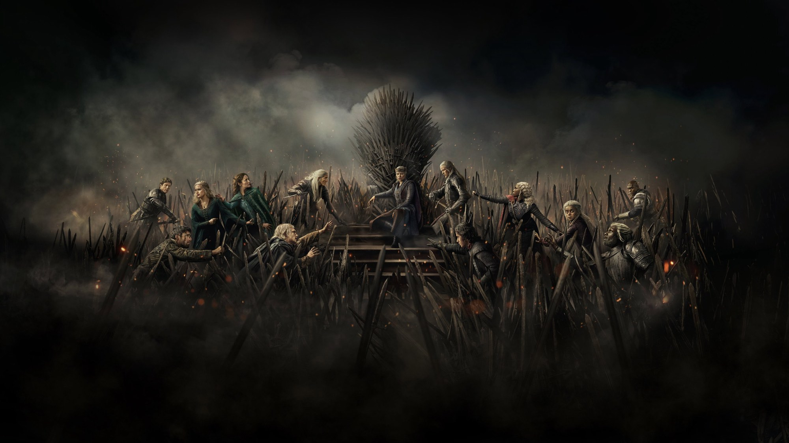
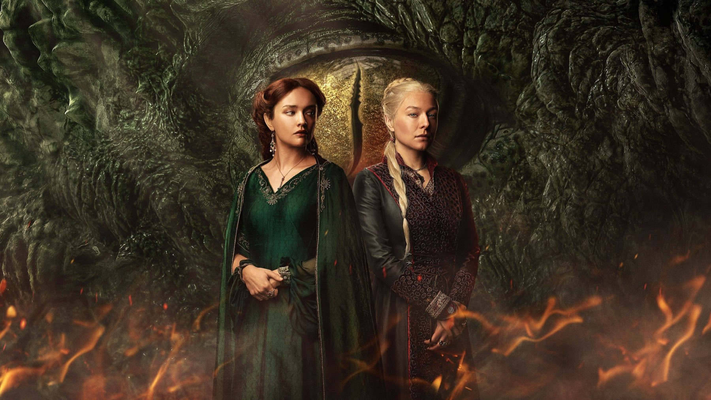
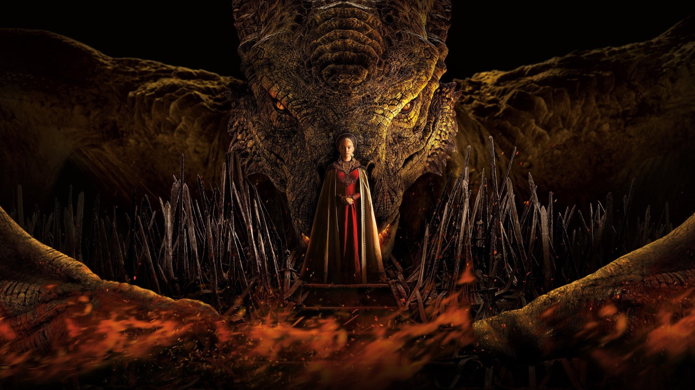

House of the Dragon – Stagione 3
La Danza dei Draghi entra nel vivo: battaglie epiche e finale potente, ma una parte centrale che prende troppo tempo per decollare
Per due stagioni ci siamo sentiti ripetere che la guerra stava per cominciare. Con la terza, House of the Dragon la mette finalmente in scena: otto episodi, dal 21 giugno al 9 agosto 2026, in cui i draghi smettono di essere un simbolo e diventano armi. Ora che il finale è andato in onda possiamo fare il punto, e la sensazione è quella di una stagione migliore della precedente ma ancora a metà strada tra la serie che potrebbe essere e quella che è.
I numeri della critica sono buoni: circa il 91% di recensioni positive su Rotten Tomatoes, il risultato migliore dello show, e un punteggio intorno a 75 su 100 su Metacritic. Ma tra i recensori italiani il giudizio si divide molto più di quanto dicano le percentuali.
Di cosa parla House of the Dragon 3?
Siamo nella Westeros che precede di circa due secoli gli eventi de Il Trono di Spade. La successione di re Viserys ha spaccato la casa Targaryen in due fazioni: da una parte Rhaenyra, sostenuta dal Consiglio Nero e da Daemon, dall'altra il fratellastro Aegon II, con la madre Alicent Hightower e il Consiglio Verde. È la guerra civile nota come Danza dei Draghi, e la stagione la racconta a partire dalle alleanze: ogni casata del regno viene corteggiata, minacciata o comprata.
Nel cast tornano Emma D'Arcy, Matt Smith, Olivia Cooke, Tom Glynn-Carney e Ewan Mitchell. Tra i nuovi arrivi spiccano James Norton nei panni di Ormund Hightower, Tommy Flanagan e Dan Fogler. Alla guida c'è Ryan Condal, ora showrunner unico. Le riprese si sono svolte a Leavesden, vicino a Londra, tra marzo e ottobre 2025.

Perché funziona
Il merito più evidente è l'azione. Le grandi sequenze belliche, a partire dalla battaglia dello Stretto fino a quella di Tumbleton nel finale, sono tra le cose più riuscite mai viste in questo universo: il regno vive di draghi, e finalmente si vede che cosa significa tenerne uno in guerra. ComingSoon nota con precisione che il finale mostra cosa succede quando un'arma di questa portata sfugge al controllo, e Nerd al Quadrato elogia fotografia ed effetti speciali. Sky TG24 parla di una guerra raccontata senza gloria, e per una serie che per due anni ha lasciato i combattimenti sullo sfondo è una dichiarazione d'intenti.
Il secondo punto di forza sono gli interpreti. Emma D'Arcy, Matt Smith, Olivia Cooke e James Norton sono i più citati dalla critica, e non a caso: la stagione stringe le distanze tra i personaggi, che dopo troppi percorsi paralleli tornano a incrociarsi più spesso. Rhaenyra è sempre più isolata e più dura, un'evoluzione che Carolina Mautone, su ComingSoon, legge come il racconto di come il potere logori, più che come una questione di sangue Targaryen.
Più draghi in cielo, più guerra a terra: la Danza finalmente si balla, anche se il ritmo è lento.
Il problema del ritmo
Il difetto su cui le recensioni si ritrovano è lo stesso di sempre: la costruzione. ComingSoon assegna tre stelle su cinque, loda la partenza e la chiusura e giudica ripetitiva la parte centrale, incapace di dare vera spinta alla guerra. Wonder Channel arriva a un 5 su 10 e definisce la stagione costosissima ma vuota, con trame secondarie che si trascinano e personaggi che ripetono discorsi simili da un episodio all'altro. Nerd al Quadrato, più generoso con un 7, lamenta comunque una scrittura debole, motivazioni poco credibili per alcuni personaggi e archi, come quello di Rhaena, privi di peso.
Condividiamo buona parte di queste riserve. Con otto episodi a disposizione, e una stagione finale in arrivo, ci si aspettava un ritmo più incalzante; invece le parentesi di corte e le discussioni sul da farsi occupano più spazio dei combattimenti. È un peccato, perché quando la serie accelera dimostra di saperlo fare molto bene.
Anche il pubblico è più freddo dei critici: a ottobre 2026 il Popcornmeter di Rotten Tomatoes è fermo al 65%, e nei punteggi degli spettatori su Metacritic pesano le lamentele su ritmo, scrittura e occasioni sprecate.
Un finale che rimette in carreggiata?
Quasi tutti concordano di sì. L'ottavo episodio, intitolato The Treasons at Tumbleton, è andato in onda il 9 agosto 2026 sulla rete americana HBO ed è stato accolto come la prova di forza della stagione: Sky TG24 lo definisce un episodio bello e potente, capace di tenere alta la tensione per tutto lo scontro. Non vi sveliamo nulla, ma ha il merito di non cercare scorciatoie e di sembrare davvero l'anticamera dell'ultimo capitolo, già ordinato da HBO a novembre 2025 come stagione conclusiva.

Dove vedere House of the Dragon 3 e vale la pena?
In Italia la serie è stata trasmessa da Sky Atlantic e disponibile su NOW; secondo i dati TMDB di ottobre 2026 si trova in abbonamento su Sky Go, NOW e HBO Max, anche tramite Amazon Channel.
Se avete seguito le stagioni precedenti la risposta è sì, anche solo per le battaglie. Se invece cercate l'intrigo politico serrato dei primi Trono di Spade, preparatevi a una partenza lenta e a una parte centrale che mette alla prova la pazienza. Resta una produzione di livello altissimo, ma in cui il budget sembra a volte più convincente della storia.
Se da un lato la terza stagione regala le battaglie più spettacolari dello show e un finale potente, dall'altro il ritmo lento e una scrittura che non sempre regge frenano la corsa. Meglio della seconda, ma ancora lontana dai picchi del Trono di Spade.
Domande frequenti
Quanti episodi ha la terza stagione di House of the Dragon?
Otto, andati in onda dal 21 giugno al 9 agosto 2026.
Dove vedere House of the Dragon 3 in Italia?
Su Sky Atlantic e in streaming su NOW; risulta disponibile anche su Sky Go e HBO Max.
La quarta stagione di House of the Dragon sarà l'ultima?
Sì: HBO l'ha ordinata a novembre 2025 come stagione conclusiva.
Fonti consultate (7)
- Wikipedia – House of the Dragon (season 3)
- Rotten Tomatoes – House of the Dragon: Season 3
- Metacritic – House of the Dragon: Season 3
- ComingSoon – House of the Dragon 3, recensione (Carolina Mautone)
- Wonder Channel – Recensione di House of the Dragon 3
- Nerd al Quadrato – House of the Dragon 3, recensione
- Sky TG24 – House of the Dragon 3, recensione dell'episodio 8 (Gabriele Lippi)